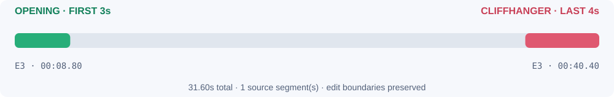

POST 0135.2s · 85.1/100
The stolen wedding
OPENING EVIDENCE · ABRIDGEDBecause he is marrying me.
UNRESOLVED CUTHow long?
A practical shortlisting tool for cold-audience microdrama ads.
Editors need usable moments and exact cut points, not another episode summary. I chose Problem 1 because safe edit boundaries are computational, while betrayal, clarity and unresolved tension need editorial judgment.
Assumptions: source timestamps are authoritative; duration is inclusive at 20–60s; dialogue stays whole; mashups use two segments. Some episodes have no suitable cut. No video, campaign data or exhaustive-recall guarantee is assumed.
3,727 beats become 4,915 audiovisual slices. Retrieve windows, preserve source boundaries, reject mid-dialogue edits and audit every output.
Gemini, OpenAI or Anthropic judges up to eight finalists by default. Keys and model IDs are editable. Scores are labeled by origin; AI cannot move timestamps.
Check actual first-3s onset, standalone human stakes and the unresolved ending. Review long beats and mashup causality in footage before posting.
Composite rank and posting priority are separate. Clear continuous cuts precede uncertain openings and unverified trailer bridges. Saved results use heuristics; live AI critiques only the configured shortlist.
Recorded scoring/audit time: 0.71s locally. Eight finalists, in batches of four, bound live inference. Two batches at an assumed 8s add ~16s; live latency is unmeasured.
Worked example: 14,400 input + 1,280 output tokens at historical $0.30/$2.50 per million = $0.00752/show, ~$1.50 for 200 weekly shows. This is an editable scenario, not a current-model quote or invoice; hosting, retries and editor time are separate.
The actual input is ~67.8k estimated tokens. A three-pass premium scenario at $2.50/$10 per million with 10k output tokens costs ~$0.61. Scale through independent show workers, input/model-version caches and rate limits. A sliding 60s boundary index would replace the current boundary-pair enumeration and repeated beat scans.
An editor’s playbook, with the weak picks left visible.
OPENING EVIDENCE · ABRIDGEDBecause he is marrying me.
UNRESOLVED CUTHow long?
OPENING EVIDENCE · ABRIDGEDThe Bearded Stranger effortlessly blocks the guard's strike and drives a devastating strike into him, dropping the armed gua…
UNRESOLVED CUTWhy are you doing this?
POST 03 · E3 00:08.80–00:40.40 · 31.6s · “You stole my wedding” → “And what happens to me?”
CHALLENGER · E25 00:13.20–00:33.80 · 20.6s · Painful shoulder grab / wound reveal → “Who?”
Source evidence is abridged. Test reviewed variants with equal spend; compare 3s hold, click-through and downstream starts. No lift has been measured.

First recommendation: E1 00:39.10–01:14.30. Color marks review windows, not additional edits. Exact source cut points are retained.
| Actual source case | Bad decision | Correction |
|---|---|---|
| E30 · 00:03.00–00:43.50 | A pocket-watch “chain” scored as physical conflict. | Reject the false hook. |
| E49 · 01:24.00–01:52.80 | Eyes “burning” with ambition looked like an injury. | Exclude metaphorical heat. |
| E21 · 00:47.30–01:39.20 | The child recovers before a Duchess subplot question. | Reject the resolved arc. |
11 curated regressions are not an accuracy benchmark. E22: SFX ends 00:42.80 vs scene 00:42.50; the real timestamp is retained and flagged.
Codex assisted code, rubric design, testing and docs. An early rule matched “hang” inside “cliffhanger,” promoting a calm cello ending in E16 00:59.00–01:23.19. Source inspection, word boundaries and regression tests corrected it.
Use the original synthetic sample or upload TXT/ZIP files. Select episodes (e.g. 2, 5, 8–10), choose a model/key, test the API and rerun. HTTP 503 gets bounded retries; exhausted requests remain visibly unsuccessful.
Limits: long-beat onset, rhetorical questions and mashup causality need review. No footage, ad-lift or successful live inference verified; provider contracts use mocks.
Prototype / code · Unedited outputs · Google pricing reference